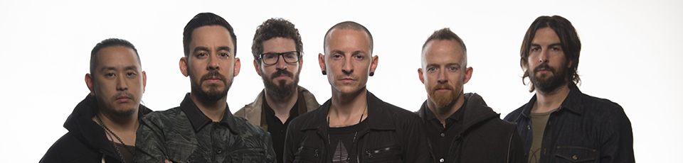

Tout commence en 1992, avec la rencontre entre Brad Delson (guitariste) et Mike Shinoda (Chanteur) au collège (3ème) d'Agoura en Californie. Ils deviennent amis grâce à une passion commune : la musique. Brad est par la suite, transféré au lycée de « North San Fernando », où il fait la rencontre de Rob Bourdon (batteur). Tous deux font parti d'un petit groupe, qui mélange rap, métal et funk, appelé Relative Degree. De son côté Mike intègre une école d'art à Pasadena, où il fait la rencontre du futur DJ de Linkin Park, Joseph Hahn. Tous deux se lient d'amitié. En 1996, tout ce petit monde se retrouve après les études et forme un groupe nommé Xero ou Super Xero. Ils sont rejoins par Mark Wakefield au chant et Dave « Phoenix » Farrell à la basse. Le groupe fait quelques concerts pour leurs potes et enregistrent des démos dans le petit studio précaire de Mike (même pas insonorisé !). En 1998, premier coup de chance, Ils sont engagés pour jouer dans le « mythique » Whisky Club de Los Angeles. Entre temps le groupe a changé de nom et s'appelle à présent : Hybrid Theory. Brad qui travaillait pour le label « Zomba », réussit à convaincre son patron de venir voir jouer son groupe. Époustouflé par la prestation des jeunes californiens, il leur offre un contrat d'édition. Mais c'est le moment que choisissent Mark et Dave pour quitter le groupe. Le premier pour mésentente avec les autres membres et le second part en tournée durant 1 an et demi avec son autre groupe The Snax, dont il était le bassiste. Mike ne pouvant pas assurer seul tous les vocaux, le groupe lance alors une annonce. Et c'est un certain Chester Bennington qui, par le biais de son avocat, se propose au poste. Il passera même le jour de son anniversaire à enregistrer sa voix sur les démos d'Hybrid Theory. Après avoir écouté le résultat par téléphone, Mike est impressionné par ce qu'il entend. Chester est tout de suite retenu et part rejoindre son nouveau groupe en Californie. Après avoir trouvé le chanteur qu'il lui manquait, le groupe se produit dans de nombreux clubs de Los Angeles. Ils enregistrent un EP sorti en 1000 exemplaires uniquement. Ils commencent aussi à se faire connaître via Internet et créent des Street-teams, ainsi qu'une communauté de fans qui s'accroît rapidement. Puis pour des raisons légales le groupe doit changer de nom (des groupes existaient déjà sous le nom d'Hybrid Theory). Il se rebaptise alors Lincoln Park (l'appartement de Chester se trouvait près du parc Lincoln Park de San Monica). Mais une fois de plus, ils doivent de nouveau changer de nom (il aurait été trop cher d'acheter un lincolnpark.com et sous ce nom le groupe se faisait passer pour un groupe local partout où ils allaient jouer). C'est de là qu'est resté le nom définitif : Linkin Park. Le groupe signe enfin chez Warner Bros Music. Ils entrent alors en studio et commencent l'enregistrement de leur premier album, avec Don Gilmore à la production et Andy Wallace au mixage. Ils appellent l'album Hybrid Theory, en hommage à leur ancien nom qu'ils aimaient tant et tenaient absolument à réutiliser. Hybrid Theory sort en Octobre 2000. Le groupe part alors pour 2 ans de tournée non-stop. Les ventes sont ahurissantes 8.7 millions de copies écoulées en l'espace d'un an. Ils sont alors les seconds vendeurs de Cds au monde, derrière Dido qui résiste à la tornade Linkin Park. Il est vrai qu'avec des tubes comme One Step Closer ou encore Crawling, impossible d'y résister. Les récompenses pleuvent, 3 Grammy awards par exemple. En Bref, c'est de la folie pour nos 6 californiens. Après de courtes vacances le groupe est de retour en studio. Au lieu de créer des nouveaux morceaux comme le font habituellement les autres artistes, ils innovent en sortant Reanimation, un album composé de remixes des 12 tubes d'Hybrid Theory et des inédits. Ils s'entourent de grosses pointures, mais aussi d'artistes underground. Et c'est un véritable succès pour Reanimation qui sort en Juillet 2002 (par exemple, en France, il s'est vendu plus de Reanimation qu'un album normal de Korn). Il faut dire que les morceaux sont méconnaissables ce qui changent des albums de remixes habituels. Après 18 longs mois de travail en studio le groupe sort son 2ème album en tant que tel, Meteora. Ce nouvel opus est très bien accueilli par la critique. On y retrouve les mêmes ingrédients qui ont fait le succès d'Hybrid Theory, c'est à dire des mélodies accrocheuses, desservies par un son mélangeant guitare et samples... Actuellement cet album s'est vendu à, environ, 16 millions exemplaires dans le monde. Et c'est reparti pour de longs mois de tournées. C'est d’ailleurs lors du « Summer Sanitarium Tour », tournée estivale de Metallica qui pour le coup avait emmené avec eux Linkin Parlk et Limp Bizkit, que le groupe enregistre son premier CD/DVD Live : Live in Texas... En ce mois de Décembre 2004, les fans sont gâtés. Fruit de l'alliance entre Linkin Park et Jay-Z, Collision Course se présente comme un mini album complété d'un DVD du show à l'origine du concept. Mélange des tubes des californiens et du King of New York, Collision Course est un subtile condensé de Hip-hop et de Néo Métal, le tout orchestré par MTV Mash Up. LP n'en finit pas de surprendre son monde ! L'album se hisse sans difficultés en haut des charts US. Dans la foulée, le groupe publie " From The Inside : Linkin Park's Meteora ". Le " produit de luxe ", illustré par Greg Watermann, glisse habilement le lecteur dans l'univers de Linkin Park, accompagné des textes rédigés par les membres eux-mêmes. Au programme : anecdotes, batailles en tout genre, tournage des clips, lettres de fans, etc ! Linkin Park offre ici une nouvelle preuve " d'amour " envers ses fans. Rien de tel pour patienter jusqu’au prochain album prévu pour le printemps 2007. En 2005, le séisme et le Tsunami qui frappent l’Asie, marquent l’ensemble de la planète qui se mobilise de façon sans précédente. Cette catastrophe fut le déclencheur d’une nouvelle dimension du groupe, son engagement humanitaire. Ainsi, c’est en 2005 que Linkin Park créé l’association humanitaire Music For Relief pour aider les victimes des catastrophes naturelles de par le monde. (Plus d’informations sur cette association dans notre rubrique « projets humanitaires ») En Mai 2007, le groupe sort Minutes To Midnight, un album de 12 titres qui s'éloigne de la mouvance néo-métal et se veut plus rock mainstream. Ce tournant divise les fans, certains regrettant (et regrettent encore) l'abandon du style néo-métal, au profit d'un style peut-être plus accessible au grand public. Les autres, voient en ce changement une évolution du groupe gagnant en maturité. Quelque soi le sentiment de chacun vis-à-vis de Minutes To Midnight, celui-ci a lui aussi atteint le sommet des charts dans de nombreux pays et a marqué un changement durable dans le style musicale du groupe. En effet, après une énorme tournée mondiale en 2007 et 2008 ponctuée par la sortie d’un deuxième album Live nommé « Road To Revolution : Live At Milton Keynes », le groupe commença à travailler sur le nouvel album lui aussi produit avec Rick Rubin. Un nouvel album qui allait encore plus s’éloigner de la mouvance néo-métal à laquelle le groupe était assigné depuis ses débuts. En 2010 parait donc A Thousand Suns, le quatrième album studio du groupe. 15 chansons complémentaires et absolument originales tant elles ne ressemblent à aucun autre style musical. Le changement orchestré par Minutes To Midnight se confirme et s’accentue avec A Thousand Suns. Certains adorent, d’autres crient au scandale. Quoiqu’il en soit, un an après la sortie de cet album, le groupe peut aujourd’hui se targuer d’avoir réussi un pari qui n’était vraiment pas gagné d’avance : être capable de se réinventer sans tomber dans l’oubli après l’énorme succès commercial de la période néo-métal, parvenir à créer des choses totalement originales et cela, en parvenant à garder une certaine base de fans et en attirant de nouveaux. Après avoir opéré une rupture avec le style des premiers succès, Linkin Park est tout de même parvenu à s’imposer comme l’un des groupes de rock les plus célèbres, les plus créatifs et les plus influents de la planète à l’heure actuelle. La période 2010, 2011 aura ainsi été le théâtre d’évènements importants dans la vie du groupe et dans le cheminement menant au statut de Grand groupe de rock. Citons par exemple, la tenue d’un concert sur l’historique place rouge de Moscou, un autre sur la Grand place de Madrid, sans oublier, une distinction honorifique de l’ONU pour l’engagement et le soutient perpétuels du groupe dans des causes humanitaires. Durant l'année 2011, le prochain album avait été annoncé, et parallèlement Mike Shinoda travaillait sur la bande son du film The Raid: Redemption, qu'il co-réalise en intégralité avec le compositeur et producteur américain Joseph Trapanese. En 2012, le cinquième album Living Thing voit le jour. Il s'agit d'un album plus intimiste que A Thousand Suns, mélangeant les genres déjà connus du groupe, avec néanmoins quelques nouvelles influences. On y retrouve des passages de guitares saturées, qui commençaient à s'effacer avec le temps, ce qui rappel alors leurs débuts. L'année suivant, lors du Summer Sonic Festival 2013, Chester et Mike montent sur scène au côté de Steve Aoki afin de présenter leur nouvelle collaboration sur le titre A Light That Never Comes. Le titre fera parti de l'album Recharged qui sortira la même année. Il contiendra des remixs de Living Things, à la façon de Reanimation à son époque (alors que Mike affirmait ne jamais refaire d'album de ce type). Parallèlement à Linkin Park, Chester intègre Stone Temple Pilots en tant que chanteur, après que ceux-ci aient remercié son prédécesseur, Scott Weiland. Ils sortent un EP nommé High Rise peu de temps après. En septembre 2013, Mike publie un article engagé sur Pigeons and Planes, en réponse à une déclaration du chanteur de blues américain Ernest Baker qui disait que « le rock d'aujourd'hui craint et est déprimant ». Mike affirme entre autre qu'en effet, à ses yeux, « le rock est devenu herbivore et contraire au principe transgressif et « carnivor » du rock. » Il ajoute qu'il est justement en studio, cherchant lui-même a retrouver cet essence. En février 2014, après une longue période d'inactivité sur les réseaux, Mike confirme que le groupe travail sur un nouvel album. Il détail celui-ci comme étant essentiellement auto-produit, et que par ailleur ils ne travaillent pas dans leurs locaux habituels. Quelques mois plus tard, Chester et Mike se joignent à Jared Leto (Thirty Seconds to Mars) en conférence de presse afin d'annoncer le Carnivore Tour. Tournée qui regroupera en continu Linkin Park, Thirty Seconds to Mars, et Afi. C'est en juin 2014 que The Hunting Party se dévoilera au complet. Cet album sera très apprécié des metalleux de la première heure, car il sera bien plus dur et agressif que ses deux prédécesseurs. En novembre 2015 , Chester quitte Stone Temple Pilots afin de se concentré sur son travail avec Linkin Park. Peu de temps après, le groupe poste une photo sur leur page Facebook annonçant un album pour 2017. Le titre Heavy, en collaboration avec Kiiara, sera le premier extrait publié de l'album. Un titre qui marquera le début de la division des critiques. En effet, à sa sortie, l'album One More Light subira de très virulentes critiques sur les réseaux sociaux dues à l'aspect très Pop et RnB de celui-ci. Il se veux pourtant très personnel de par ses textes, les membres du groupe ayant expliqué avoir voulu se livrer de façon plus intime dans ceux-ci. La façon d'écrire les chansons a elle aussi changé dans le processus de cet album. D'habitude les instruments influaient sur les textes, mais sur cet opus ce sont les textes qui ont influés sur la création de la musique. Après une promotion autour d'interventions en presse, et d'un nouveau clip pour Talking To Myself, un triste jour arriva. Le 20 Juillet 2017, Chester Bennington était retrouvé mort dans sa résidence à Los Angeles. Le médecin légiste confirme la thèse du suicide. Les raisons qui expliquent son acte restent inconnues. Chester avait combattu toute sa vie la dépression et ses addictions. Peu de temps avant, il avait été ébranlé par la mort de son ami Chris Cornell, qui s'était aussi donné la mort. Le 24 Juillet, dans une lettre adressée à Chester publiée sur le site officiel, les membres du groupe affirment qu'ils ne pourront jamais le remplacer. Après plusieurs jours de silence, le groupe remercie et salue le flot d'amour et de soutien qu'il reçoit, et reconnaît que son avenir est incertain. Ils mettent également en ligne une page pour que les fans voient leurs hommages y apparaître, tout en rappelant à ceux qui ont besoin de soutien dans des moments difficiles, qu'une aide peut leur être apportée, le site rassemblant les numéros de téléphone utiles en cas d'envies suicidaires. Le 27 Octobre 2017, un concert en hommage à Chester est organisé par Linkin Park au Hollywood Bowl. Un concert historique qui durera plus de 3 heures avec des invités tels que Blink-182 (avec qui ils devaient réaliser une tournée nommée Blinkin Park), Jonathan Davis (Korn), M. Shadows (Avenged Sevenfold), Oliver Sykes (Bring Me The Horizon), ou encore Deryck Whibley (Sum 41). Suite à ceci, Mike Shinoda réalise un album solo sous son propre nom nommé Post Traumatic. Il y exprime dans ses chansons ses émotions et questions sans réponses suite à ce tragique moment. S'en suit une tournée exceptionelle Post Traumatic Tour autour du monde. Joe Hahn fait quelques apparitions en tant que DJ en concerts. Phoenix anime un podcast nommé Member Guests, au côté de Mark Fiore. Linkin Park reste en suspens, mais Mike fait savoir via les réseaux sociaux que dès qu'il y aura des nouvelles concernant le groupe, ils en donneront...
